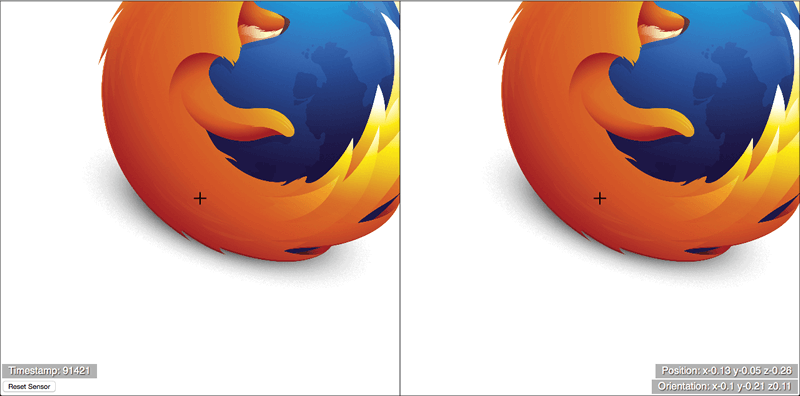

This article is in need of a technical review.
This article is in need of an editorial review.
Draft
This page is not complete.
The WebVR API is a fantastic addition to the web developer's toolkit, allowing access to virtual reality hardware such as the Oculus Rift, and converting outputted movement and orientation data into view rendering updates on a web app. But how do you get started in developing VR apps for the Web? This article will guide you through the basics.
Note: Currently WebVR is at an experimental stage (you can find the latest spec here); it currently works best in Firefox Nightly/Developer Edition, with some aspects of it also working in Google Chrome. Read Bringing VR to Chrome by Brandon Jones for more details on that.
Getting started
To get started, you need to have your VR hardware set up as recommended in the owner's manual, and your computer set up as indicated in WebVR environment setup. A dedicated GPU is recommended for smoother performance.
You also need to have Firefox Nightly (or Developer Edition) installed, along with the WebVR Enabler Add-on.
Once your environment is set up, try visiting one of our MozVR projects and clicking on the "Enter VR" button to test it out.
Note: For more in depth information, be sure to check out WebVR environment setup.
Note: There are also cheaper options available such as using a mobile device for the head mounted display (in this case you won't have a position sensor available, so you might have to fake the orientation data using the deviceorientation API instead perhaps.)
Introducing a simple demo
There are a number of WebVR demos available at the MozVR team repo, and the MDN webvr-tests repo, but the main one we will be focusing on in this article is our positionsensorvrdevice demo (view it live):

This is a simple 2.5D demo showing a Firefox logo seen on a left and right eye view, rendered on HTML5 Canvas. When you view the demo with a VR HMD and click the canvas, the demo will go fullscreen, and you'll be able to approach the Firefox logo. It will move realistically as you move your head towards and away from it, up and down and side to side, and rotate your head in any direction.
The demo was deliberately kept simple so that you can easily see what is going on with the WebVR code. The API is simple enough that you can easily apply WebVR-controlled movement to any app you like, from simple DOM-based interfaces to complex WebGL scenes.
How does the app work?
In this section we'll go through the different parts of the code that make the app work, so you can see what's required at a basic level.
Accessing the VR devices
The first thing to do is get a programmatic reference to the VR hardware connected to your computer. This is done using Navigator.getVRDevices, which returns a promise that resolves to an array of all the vr devices connected to your computer.
There are two kinds of object that may be returned:
PositionSensorVRDevice: A position sensor camera.HMDVRDevice: A VR head mounted display.
You can see some very simple code showing the kind of basic device information that can be returned in our vrdevice demo.
However, what you really want is something that grabs a pair of devices (perhaps many pairs in multiplayer VR games of the future). The following code taken from the WebVR spec (and also used in the positionsensorvrdevice demo) does the trick pretty well:
var gHMD, gPositionSensor;
navigator.getVRDevices().then(function(devices) {
for (var i = 0; i < devices.length; ++i) {
if (devices[i] instanceof HMDVRDevice) {
gHMD = devices[i];
break;
}
}
if (gHMD) {
for (var i = 0; i < devices.length; ++i) {
if (devices[i] instanceof PositionSensorVRDevice && devices[i].hardwareUnitId === gHMD.hardwareUnitId) {
gPositionSensor = devices[i];
break;
}
}
}
});
Here we grab the first instance we find of an HMDVRDevice and store it in the gHMD variable. Next, we grab the first instance we find of a PositionSensorVRDevice and store it in the gPositionSensor variable, but only if its VRDevice.hardWareUnitId property matches that of the gHMD object. Separate devices that are part of the same overall hardware unit will share a hardware unit ID — this is how you check that you've got references to two matching devices.
Initialising the app
The scene is rendered on a <canvas> element, created and placed as follows:
var myCanvas = document.createElement('canvas');
var ctx = myCanvas.getContext('2d');
var body = document.querySelector('body');
body.appendChild(myCanvas);
Next, we create a new image and use a load event to check that the image is loaded before running draw(), the main loop for our app:
var image = new Image(); image.src = 'firefox.png'; image.onload = draw;
The main loop
draw() looks like this:
function draw() {
WIDTH = window.innerWidth;
HEIGHT = window.innerHeight;
lCtrOffset = WIDTH*0.25;
rCtrOffset = WIDTH*0.25;
myCanvas.width = WIDTH;
myCanvas.height = HEIGHT;
setView();
drawImages();
drawCrosshairs();
requestAnimationFrame(draw);
}
The window WIDTH and HEIGHT is resampled on each frame then used to set:
- A left and right offset value used to keep the image drawn relative to the center of the left and right eye view. Because we are drawing two half-width copies of the scene, the center of each copy is actually a quarter of the total canvas width in from the edge, in each case.
- The width and height of the canvas.
This is done so that the scene will resize correctly whenever the browser window is resized by the user.
Next in the loop we run three functions:
setView()retrieves position and orientation information from the VR hardware, ready for use in drawing the updated image positions in the scene.drawImages()actually draws the updated image positions in the scene.drawCrosshairs()draws the crosshairs that remain in the center of the scene at all times.
You'll learn more about these later on.
Finally for the loop, we run requestAnimationFrame(draw) so that the draw() loop is continually run.
Retrieving position and orientation information
Now lets study the setView() function in detail. We'll step through each part of the code, explaining what it all does:
function setView() {
var posState = gPositionSensor.getState();
First we call PositionSensorVRDevice.getState on the reference to our position sensor. This method returns everything you might want to know about the current state of the HMD — accessible through a VRPositionState object — including its position, orientation, and more advanced information such as linear and angular velocity/acceleration.
if(posState.hasPosition) {
posPara.textContent = 'Position: x' + roundToTwo(posState.position.x) + " y"
+ roundToTwo(posState.position.y) + " z"
+ roundToTwo(posState.position.z);
xPos = -posState.position.x * WIDTH * 2;
yPos = posState.position.y * HEIGHT * 2;
if(-posState.position.z > 0.01) {
zPos = -posState.position.z;
} else {
zPos = 0.01;
}
}
In the next part, we first check to make sure valid position information is available for the HMD using VRPositionState.hasPosition, so that we don't return an error and stop the app working (if the HMD is switched off, or not pointing at the position sensor.)
Then we output the current position information to a paragraph in the app UI for information purposes (rounded to two decimal places using a custom function to make it more readable.)
Last up, we set our xPos, yPos, and zPos variables relative to the position information stored in VRPositionState.position. You'll notice that we have used an if ... else block to make sure the zPos value stays at 0.01 or above — the app was throwing an error if it went below 0.
if(posState.hasOrientation) {
orientPara.textContent = 'Orientation: x' + roundToTwo(posState.orientation.x) + " y"
+ roundToTwo(posState.orientation.y) + " z"
+ roundToTwo(posState.orientation.z);
xOrient = posState.orientation.x * WIDTH;
yOrient = -posState.orientation.y * HEIGHT * 2;
zOrient = posState.orientation.z * 180;
}
Next, we use a similar process to update the scene according to the HMD's orientation — check that valid orientation data is available using VRPositionState.hasOrientation, display orientation data in the UI for informational purposes, and then set the xOrient, yOrient, and zOrient values relative to the orientation information stored in VRPositionState.orientation.
timePara.textContent = 'Timestamp: ' + Math.floor(posState.timeStamp); }
Finally, we output the current timeStamp stored in VRPositionState.timeStamp to the UI for information. This value can be useful for determining if position data has been updated, and what order updates have occured in.
Updating the scene
The xPos, yPos, zPos, xOrient, yOrient and zOrient value retrieved by setView() are all used as modifiers for updating the scene rendering done by drawImages(). We'll look at how below, although we'll only walk through the code for drawing the left eye view (the other is very similar, but shifted over to the right):
function drawImages() {
ctx.fillStyle = 'white';
ctx.fillRect(0,0,WIDTH,HEIGHT);
First we draw a white fillRect() to clear the scene before the next frame is drawn.
ctx.save(); ctx.beginPath(); ctx.translate(WIDTH/4,HEIGHT/2); ctx.rect(-(WIDTH/4),-(HEIGHT/2),WIDTH/2,HEIGHT);
Next, we save the context state with save() so we can treat the left eye view as a separate image and not have its code affect the right eye view.
We then begin a path, translate the canvas so that the origin is now in the center of the left eye view (a quarter of the width across and half the height down) — which is needed so that the rotation works correctly (rotation happens around the origin of the canvas) — and draw a rect() around the whole left eye view.
Note that the rect() has to be drawn starting from minus a quarter of the width and minus half the height, because of the translation applied earlier.
ctx.clip();
Now we clip() the canvas. Because we called this just after the rect() was drawn, anything else that we do on the canvas will be constrained inside the rect(), with any overflow hidden until a restore() call is made (see later on.) This ensures that the whole left eye view will remain separate from the right eye view.
ctx.rotate(zOrient * Math.PI / 180);
A rotation is now applied to the image, related to the current value of zOrient, so that the scene rotates as you rotate your head.
ctx.drawImage(image,-(WIDTH/4)+lCtrOffset-((image.width)/(2*(1/zPos)))+xPos-yOrient,-((image.height)/(2*(1/zPos)))+yPos+xOrient,image.width*zPos,image.height*zPos);
Now for the actual image drawing! This rather nasty line of code needs breaking down, so here it is, argument by argument:
image: The image to be drawn-(WIDTH/4)+lCtrOffset-((image.width)/(2*(1/zPos)))+xPos-yOrient: The horizontal coordinate of the image origin. This first needs to be reduced byWIDTH/4to compensate for the translation done earlier. Then, we add the left center offset to put it back in the middle, then we subtract the image width divided by 2 times the reciprocal ofzPos— so as the image is drawn smaller/larger the amount subtracted will get smaller/larger, again keeping the image in the center. Finally, we add thexPosand subtract theyOrientvalues to update the image position as the HMD is moved or rotated horizontally (rotation around the y axis moves the image horizontally.)-((image.height)/(2*(1/zPos)))+yPos+xOrient: The vertical coordinate of the image origin. In this case the "subtract HEIGHT/2" and "add right center offset" exactly cancel each other out, so I've just removed them from the equation. That just leaves subtracting the image width divided by 2 times the reciprocal of zPos to keep the image in the center, as above, and modifying the drawn position byyPosandxOrient.image.width*zPos: The width to draw the image; this is modified byzPosso it will be drawn bigger as you get closer to it.image.height*zPos: The height to draw the image; this is modified byzPosso it will be drawn bigger as you get closer to it.
ctx.strokeStyle = "black"; ctx.stroke();
Next we draw a black stroke() around the left eye view, just to aid the view separation a bit more.
ctx.restore();
Finally, we restore() the canvas so we can then go on to draw the right eye view.
... }
Note: We are kind of cheating here, using a 2D canvas to approximate a 3D scene. But it keeps things simple for learning purposes. You can use the position and orientation data discussed above to modify the view rendering on any app written with web technologies. For example, our 3Dpositionorientation demo uses very similar code to that shown above to control the view of a WebGL scene created using Three.js.
Note: The code for drawCrosshairs() is very simple in comparison to drawImages(), so we'll leave you to study that for yourself if you're interested!
Fullscreen
The VR effect is much more effective if you set your app runnning in fullscreen mode — this generally means setting your <canvas> element to fullscreen when a specific event occurs — such as double-clicking the display or pressing a specific button.
In this case I have just kept things simple, running a fullScreen() function when the canvas is clicked:
myCanvas.addEventListener('click',fullScreen,false);
The fullScreen() function checks which version of the requestFullscreen() method is present on the canvas (this will differ by browser) and then calls the appropriate one, for maximum compatibility:
function fullScreen() {
if (myCanvas.requestFullscreen) {
myCanvas.requestFullscreen();
} else if (myCanvas.msRequestFullscreen) {
myCanvas.msRequestFullscreen();
} else if (myCanvas.mozRequestFullScreen) {
myCanvas.mozRequestFullScreen();
} else if (myCanvas.webkitRequestFullscreen) {
myCanvas.webkitRequestFullscreen();
}
}
Calibrating field of view and device orientation
I've not given much thought to this in my current demo, but in commercial apps you'll need to do some user calibration to make sure your app is working for the user and their particular VR hardware. The WebVR API has a number of features to aid in this.
First of all, you can use the PositionSensorVRDevice.resetSensor method to reset the HMD position orientation. Effectively what it does is to set the current position/orientation of the headset to 0. So you need to ensure it is held in a sensible 0 position before running the function. In our positionsensorvrdevice demo***, you can play with it using our "Reset Sensor" button:
<button>Reset Sensor</button>
document.querySelector('button').onclick = function() {
gPositionSensor.resetSensor();
}
The other thing to calibrate is the field of view (FOV) of your headset — how much of the scene can be seen in the up, right, down and left directions. This information can be retrieved for each eye separately using the HMDVRDevice.getEyeParameters method, which returns parameters for each eye separately (you need to call it twice, once with a parameter of left, and once with a parameter of right.) This returns a VREyeParameters object for each eye.
As an example, you could retrieve the current field of view for an eye using VREyeParameters.currentFieldOfView. This returns a VRFieldOfView object containing four properties:
upDegrees: The number of degrees upwards that the field of view extends in.rightDegrees: The number of degrees to the right that the field of view extends in.downDegrees: The number of degrees downwards that the field of view extends in.leftDegrees: The number of degrees to the left that the field of view extends in.
The field of view created is a pyramid shape, the apex of which is emanating from the eye.
You could check whether the user has a suitable field of view for your app, and if not, set a new field of view using HMDVRDevice.setFieldOfView method. A simple function to handle this might look like so:
function setCustomFOV(up,right,down,left) {
var testFOV = new VRFieldOfView(up,right,down,left);
gHMD.setFieldOfView(testFOV,testFOV,0.01,10000.0);
}
This function accepts the four degree values as arguments, then creates a new VRFieldOfView object using the VRFieldOfView() constructor. This is then fed into setFieldOfView() as the first two arguments (the FOV for the left eye and the right eye). The third and fourth arguments are the zNear and zFar values — how close and far away from the eye an object can be in the direction of the FOV and still be inside it.